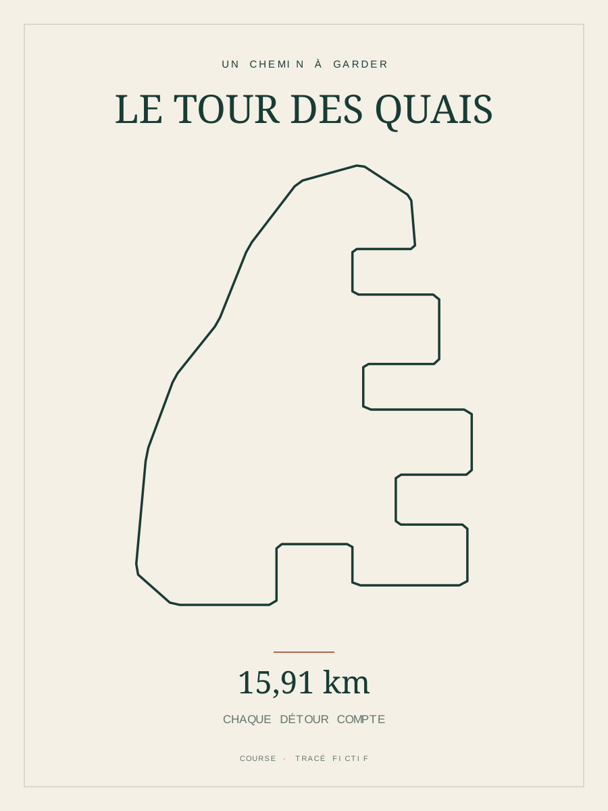

Votre parcours
Importez un fichier GPX de course, de randonnée ou de vélo. La distance est calculée à partir des points GPS.
DU PARCOURS AU SOUVENIR
Créez le fichier depuis votre GPX.
Une sortie à garder, un titre à lui donner, des couleurs à choisir. Téléchargez votre composition et gardez-en le fichier.
Fichier numérique PNG / SVG.
Impression et livraison non proposées.

Exemple fictif · votre GPX remplacera ce tracé.
Importez un fichier GPX de course, de randonnée ou de vélo. La distance est calculée à partir des points GPS.
Ajoutez un titre, une date et choisissez parmi trois palettes. L’aperçu se met à jour dans votre navigateur.
Téléchargez un PNG de 3 543 × 4 724 pixels ou un SVG vectoriel. Aucun compte nécessaire.
LE PARCOURS VOUS APPARTIENT
Votre fichier est traité localement. Il n’est pas envoyé à un serveur et n’est pas sauvegardé automatiquement. Vous décidez ensuite où conserver ou partager votre export.
AVANT DE COMMENCER
Vous obtenez un fichier numérique gratuit. Ce service ne prend pas de commande d’impression et n’expédie aucun objet. Une éventuelle impression chez un prestataire reste séparée ; son gabarit et ses marges doivent être vérifiés.
Vous pouvez essayer l’un des trois parcours fictifs. Pour votre propre trajet, consultez l’aide du générateur : elle explique où chercher l’export GPX dans votre application sportive.
La composition représente la ligne de votre parcours, sans carte ni profil d’altitude. Elle sert de souvenir décoratif, pas de document de navigation.
GPX jusqu’à 2 Mo et 20 000 points. Les segments séparés restent séparés. Les très longues traces sont simplifiées pour l’affichage ; la distance utilise tous les points importés.